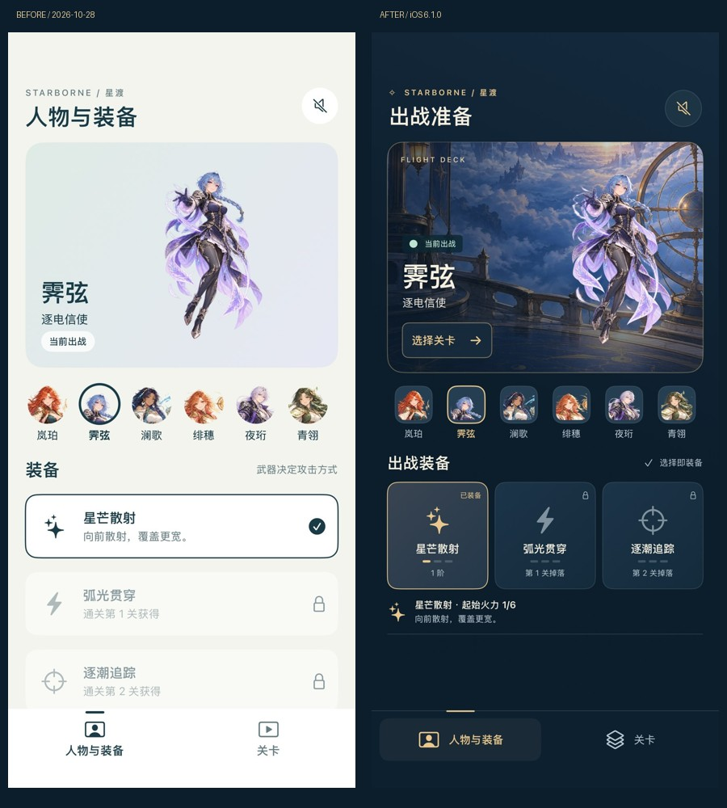
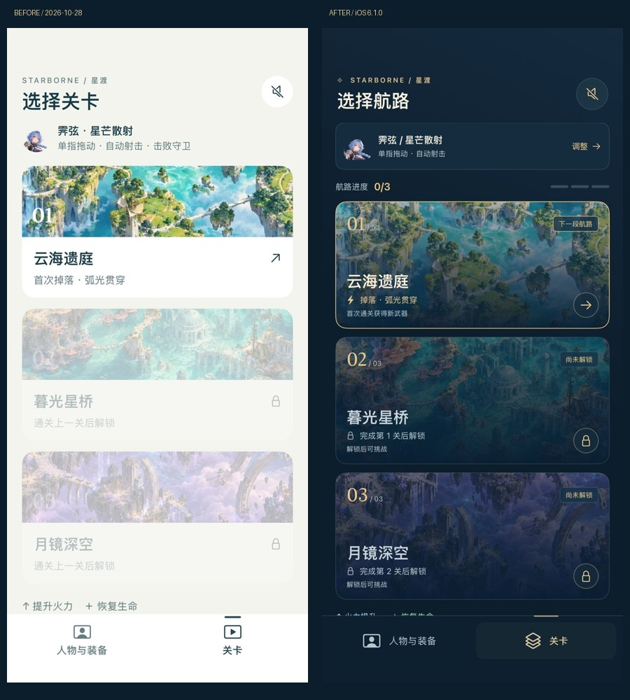
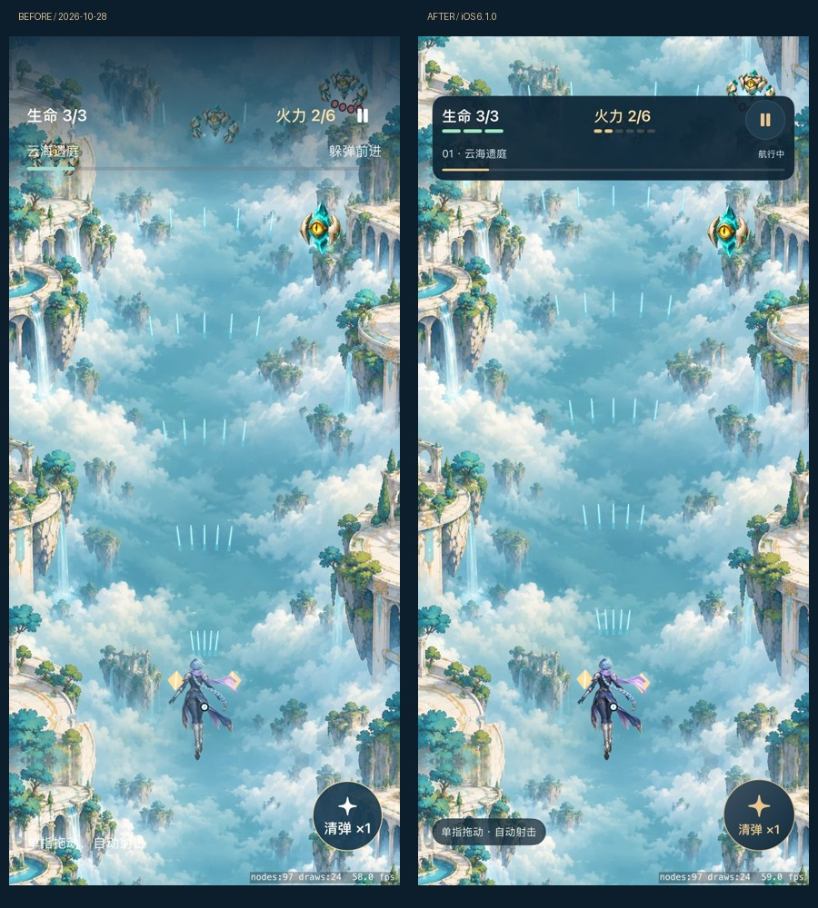
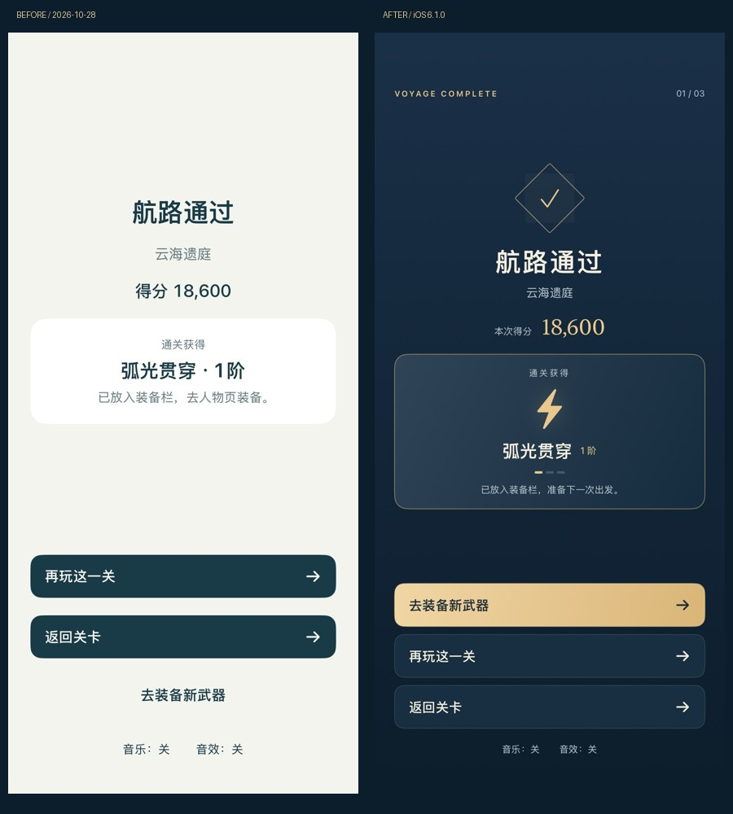
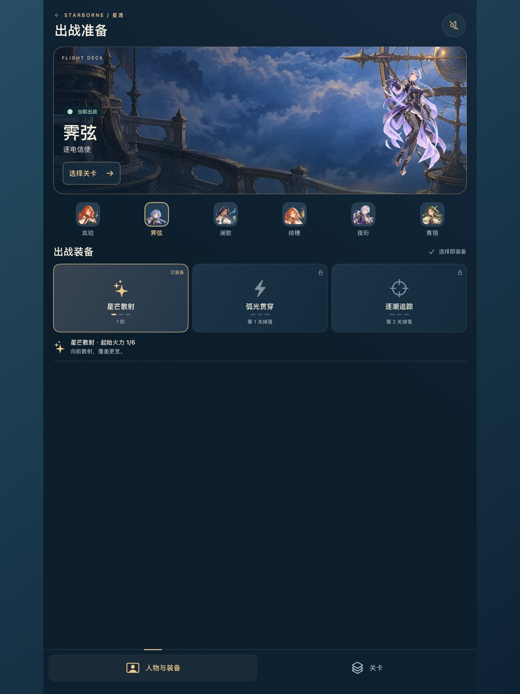

STARBORNE / WEB 10.0 / iOS 6.1.0 (11)
已发布 · 网页 10.0 · iOS 6.1.0（11）两页不变，让出战更像一次启航。
人物成为主视觉，武器可并排比较，关卡一眼分清可出发与未解锁。保留两页签、六人物、三关及现有单指射击循环；没有恢复地图、养成、支援或抽卡。
iOS 6.1.0（11）已加入原来的内部 TestFlight 测试组。打开 TestFlight 更新《星渡》即可；上方按钮可在手机直接试玩网页 10.0。
改前 / 改后：实际原生界面

人物页：原创甲板、完整全身人物、六人物选择；三个武器并排显示状态、阶数、解锁条件和实际攻击效果。
关卡页：已通关进度、下一段可出发航路、明确锁定原因，以及按原有规则计算的下一次掉落。
战斗：高对比生命与火力分段、稳定的暂停按钮和清弹次数，中央与左下保留拖动区域。
结算：武器与阶数成为中心，优先“去装备新武器”，重玩和返回仍保留。此图使用明确的模拟器通关夹具。改善理由
- 用一张原创 imagegen 甲板插画建立统一场景感，不增加新的导航层。
- 角色、武器、出发三个层级更清楚；锁定状态同时用图标与文字表达。
- 不再把三把武器纵向堆叠，当前人物、所有装备和入口能在常用手机尺寸下同时看到。
- 按压与奖励动效只作用于 UI，减少动态时关闭；键盘页签导航与选择播报保留。
- 游戏核心 SHA-256 与已发布包完全一致，战斗数值、碰撞、移动与奖励没有随 UI 改动。
查看 iPad 实际界面

本次验证
| 检查 | 结果 |
|---|
| 共享规则 | 158 项通过 |
| iPhone / iPad 专用模拟器 | 各 24 项通过，零失败/零跳过 |
| 开音乐和音效的 Release 场景 | 17 个通过；与前版相同种子 42、相同输入 |
| 网页 | 13 项通过；320 / 390 / 768 宽度、减少动态、键盘导航、无外部请求或页面错误 |
| 发布状态 | 网页已发布；内部 TestFlight 可测试；本轮未提交首次 App Store 正式上架 |
仍待确认
需要在实体手机确认长时间阅读、单手触达、画面亮度和动效舒适度；模拟器数据不能证明真机的 GPU、温度或耗电。奖励截图不代表真人通关体验。构建 VALID / IN_BETA_TESTING 和原测试组关联已核对，尚未确认手机实际安装。
原生截图下方可能显示 QA 诊断；真实设备发行版仍受现有编译条件保护而关闭诊断。新签名安装包的 108 个运行资源与验收版本一致，实机诊断关闭检查通过。